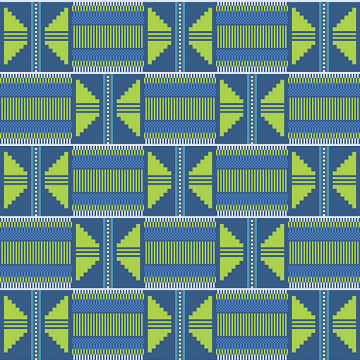
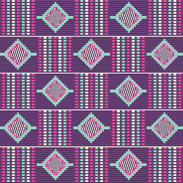
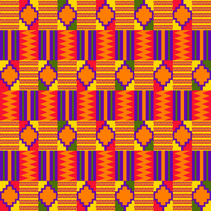
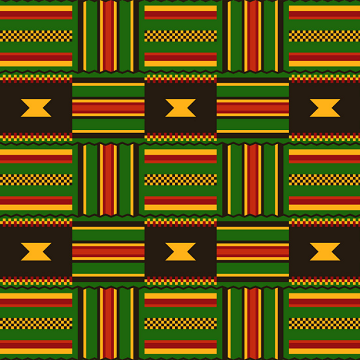
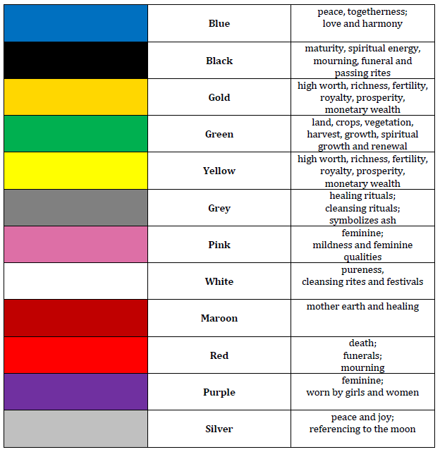

Now one of the most ubiquitous symbols of African and African American culture, kente cloth originated in the Akan-Ashanti kingdoms in Ghana. It dates back 375 years, conceived in a village called Bonwire. According to legend, Kurugu and Ameyaw, two brothers from the village, went hunting one afternoon and came across a spider spinning a web. They were amazed by the beauty of the web and thought that they could create something like it. Upon returning home, they made the first cloth out of black and white fibers from a raffia tree.
Which kente cloth contains colors symbolizing femininity, wealth, fertility, growth, and mourning?




